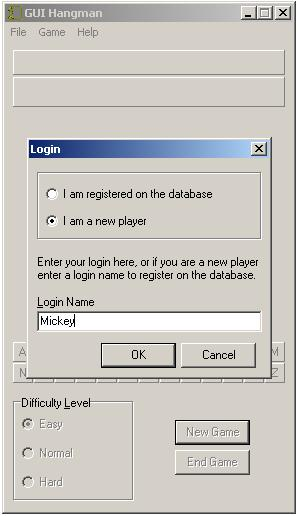
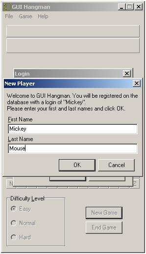

Creating a New Player
If you haven't played GUI Hangman before you'll need to create a new player account. This can be done by selecting File | Login from the main menu. A new window will pop up asking you if you've played before on not. Choose "I am a new player" and type the name that you'd like to use in the Login Name text box.

If the name that you typed in hasn't already been chosen you'll be greeted by another window that will ask you to enter your first and last names. Do that, and click OK. A dialog box will pop up informing you that the account was creating successful. Once you've logged in you can start playing the game.
